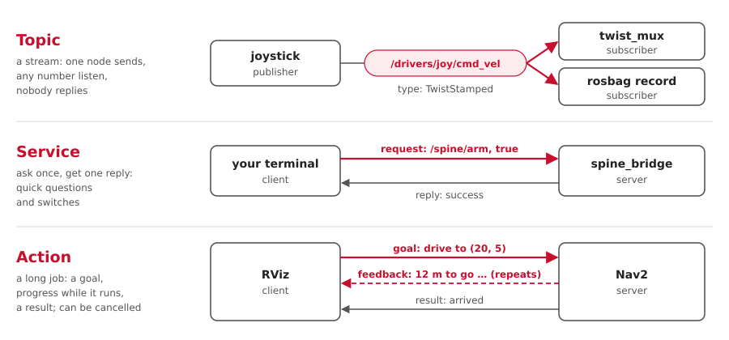

ROS 2 is three things: a way for programs to send each other messages, a library of ready-made programs (Nav2, robot_localization, twist_mux …), and tools to build them and look inside. We configure the ready-made programs, and write a few of our own.
The three parts
| Part | What it is | Examples |
|---|---|---|
| Messaging | Programs, called nodes, publish typed messages on named topics. Any node on the network can listen. Nodes find each other by themselves. | /control/cmd_vel, /sensors/imu/data |
| Packages | Thousands of open-source nodes, configured with YAML | Nav2, robot_localization, twist_mux, turtlesim |
| Tools | Build, run, inspect, record and visualise | colcon, ros2, RViz, rqt, ros2 bag |
A ROS release is one tested set of all three. Ours is Jazzy, supported until May 2029.
Three ways for nodes to talk

| Kind | Use it for | Ours |
|---|---|---|
| Topic | anything that streams: sensors, commands, state | /drivers/*/cmd_vel, /vehicle/odom, /tf |
| Service | a quick question, or a switch | /spine/arm, /fromLL |
| Action | a job that takes seconds, with progress, and can be cancelled | /scripted_drive, /navigate_to_pose |
The other words
| Word | Means | A bit like |
|---|---|---|
| Message type | the struct on a topic, defined in a .msg file |
a struct every language shares |
| Parameter | a node's settings, loaded from YAML when it starts | command-line flags |
| Launch file | a Python script that starts a set of nodes with their settings | docker compose |
| TF | where every frame (map, odom, base_link, imu_link) sits, over time |
a scene graph |
| QoS | delivery rules per topic. Mismatched rules mean no connection, and no error. | TCP vs UDP |
| Domain ID | computers with the same ROS_DOMAIN_ID see each other |
a radio channel |
| Bag | a recording of topics, to play back later | a flight recorder |
Building: packages, colcon, ament
| ROS | What it does | In Cargo terms |
|---|---|---|
| Package | the unit ROS builds; package.xml lists its dependencies |
a crate and its Cargo.toml |
| Workspace | a folder of packages built together. This repository is one. | a Cargo workspace |
colcon build |
builds every package in dependency order, in any language | cargo build --workspace |
| ament | the build rules underneath: ament_python (setuptools) or ament_cmake (CMake) |
the build backend |
source install/setup.bash |
puts our built packages on the path | adding target/ to PATH |
| pixi | installs ROS itself and every dependency, into this folder | rustup, for the whole toolchain |
Stock packages vs our nodes
| Stock: we configure | Ours: we write | |
|---|---|---|
| Examples | Nav2, robot_localization, twist_mux, joy, teleop, turtlesim | ego, scripted_driver, spine_bridge, the turtlesim and Gazebo adapters |
| We change | YAML files and launch files | Python code |
| Rule | use these first | only for glue that's specific to our car |
Adding a node, in five steps
- Pick the layer's folder, for example
src/drivers/. - Make a Python package:
package.xmlfor the dependencies,setup.pyfor the entry point. - Put the logic in a plain module with no ROS imports, and test it. A thin node file does the publishing and subscribing.
- Add its topics to
docs/interfaces.yaml, and the node to a launch file. - Run
pixi run build, start it, and check it withpixi run check.
A complete driver that circles left:
import rclpy
from rclpy.node import Node
from geometry_msgs.msg import TwistStamped
class Circle(Node):
def __init__(self):
super().__init__('circle_driver')
self.pub = self.create_publisher(TwistStamped, '/drivers/scripted/cmd_vel', 10)
self.create_timer(0.1, self.tick) # ten times a second
def tick(self):
msg = TwistStamped()
msg.header.stamp = self.get_clock().now().to_msg()
msg.twist.linear.x = 0.5 # m/s forward
msg.twist.angular.z = 0.2 # rad/s, left
self.pub.publish(msg)
rclpy.init()
rclpy.spin(Circle())Looking inside a running system
| Command | Shows |
|---|---|
ros2 node list, ros2 node info /ego |
what's running; a node's topics and settings |
ros2 topic echo /control/cmd_vel, ros2 topic hz /sensors/imu/data |
the messages on a topic; how often they come |
ros2 param dump /ekf_local |
every setting a node is really using |
pixi run graph (rqt_graph) |
nodes and topics as a live diagram |
rqt_tf_tree |
the frame tree, and who publishes each link |
pixi run view (RViz) |
the 3D view: the car, the map, costmaps, the path |
| Foxglove | RViz and rqt in one app; good over WiFi (ws://<computer>:8765) |
pixi run check |
the live graph against our contract, docs/interfaces.yaml; add sim, car or replay for the other setups |